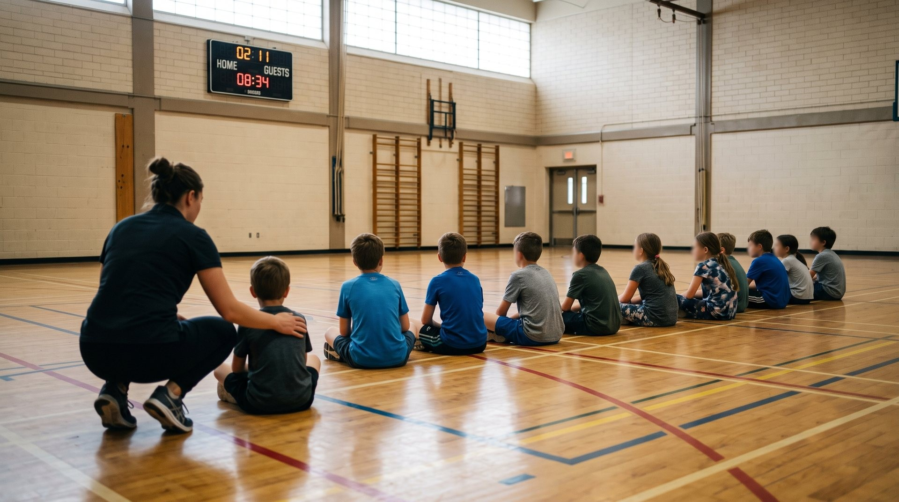
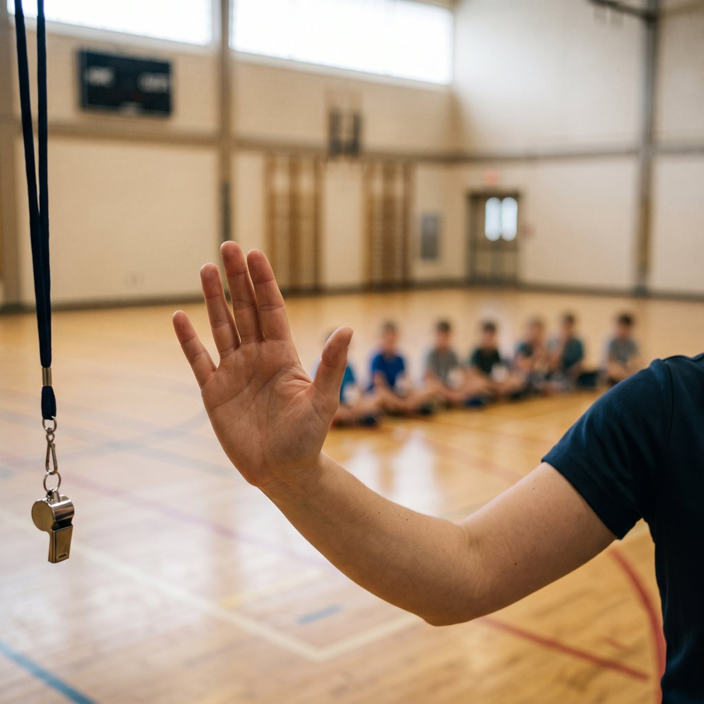

Ton brevet en éducation physique couvre la planification, l'évaluation, les compétences motrices. Ta formation DAFA couvre l'animation, la sécurité, la dynamique de groupe. Ta formation en service de garde couvre le développement de l'enfant et l'encadrement du quotidien.
Aucune des trois ne couvre le mardi où un enfant vomit sur le ballon de soccer, où l'alarme de feu part pendant que douze enfants sont en maillot de bain, et où tu découvres en comptant ta ligne que tu as vingt-et-un enfants au lieu de vingt-deux.

Pourtant, c'est ça, le métier. Les compétences motrices, tu les enseignes 5 % du temps. Les 95 % restants, tu improvises devant des situations que personne n'a jugé bon de mettre dans un cahier.
Et c'est le même 95 % pour les trois. Prof d'ÉPS, animateur de camp de jour, éducateur de service de garde — le vomi ne demande pas ton titre d'emploi avant d'arriver. Le nid de guêpes non plus. Ces dix situations tombent dans un gymnase, dans un boisé et dans un local de service de garde, et chaque fois elles te mettent exactement dans la même position : seul adulte, un incident dans les mains, vingt-cinq enfants qui regardent.
Voici le cahier. Il est écrit pour les trois.
Le seul réflexe à retenir : CODE OREILLE
Avant les dix situations, un réflexe unique qui fonctionne pour les dix. C'est la seule chose de cet article que tu dois mémoriser.
Dans chacune des catastrophes qui suivent, ton problème n'est jamais l'incident. C'est les vingt-cinq autres enfants qui regardent l'incident.

Alors tu leur donnes une consigne unique, avant de t'occuper de quoi que ce soit :
- Un mot-code. Toujours le même. Le mien : « CODE OREILLE ». Pas un sifflet — ton sifflet veut déjà dire six choses différentes.
- Une position. Assis, mains sur les genoux, ce que tu as dans les mains est posé par terre.
- Un point fixe nommé. Le mur du fond. Le gros arbre. La ligne des bancs. Pas « là où vous êtes » — dehors, ça veut dire que ton groupe s'étale sur quarante mètres.
« CODE OREILLE ! Tout le monde assis au mur du fond, maintenant. » Trois secondes. Puis tu te retournes et tu gères.
Ça ne fonctionne que si tu l'as pratiqué sans catastrophe, trois fois, en septembre ou au jour 1 du camp. Un mot-code utilisé pour la première fois le jour du vomi ne fonctionne pas. Les enfants adorent le pratiquer, en passant — pour eux c'est un jeu, pour toi c'est un exercice d'incendie.
Bon. Maintenant, les dix.